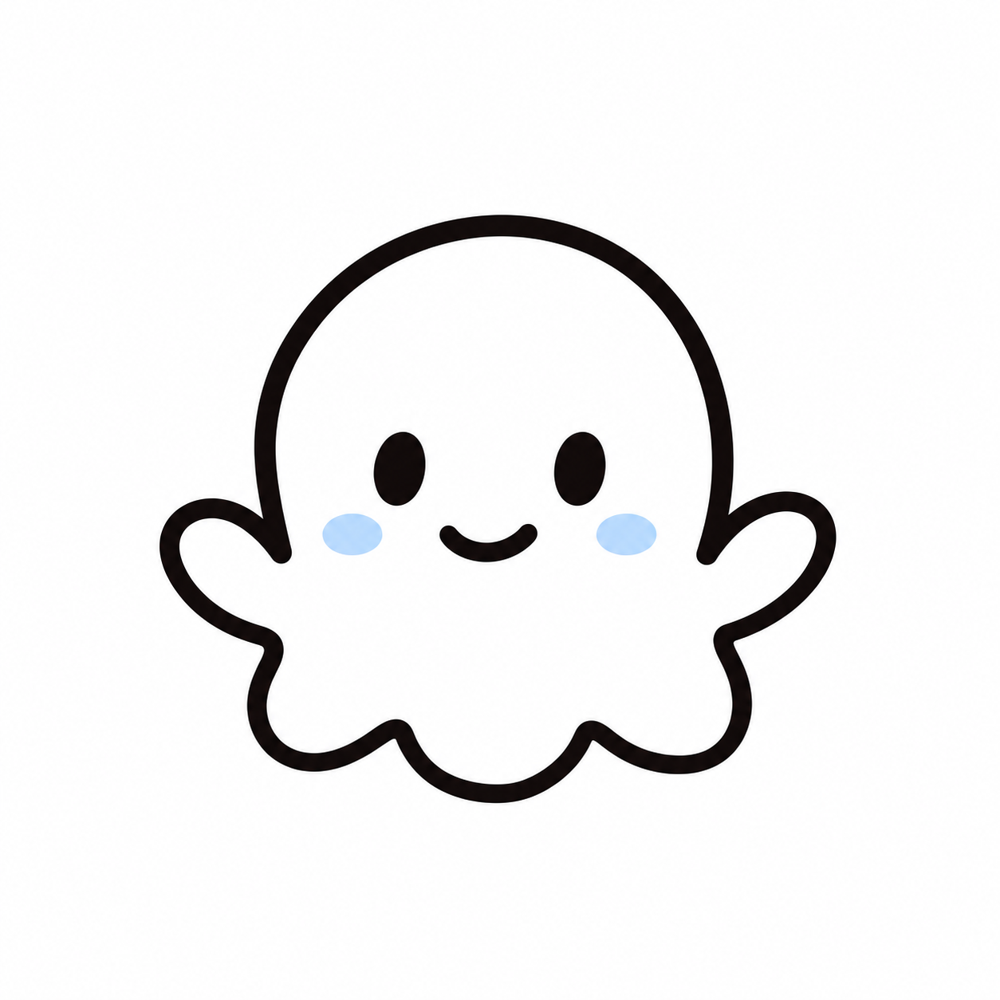
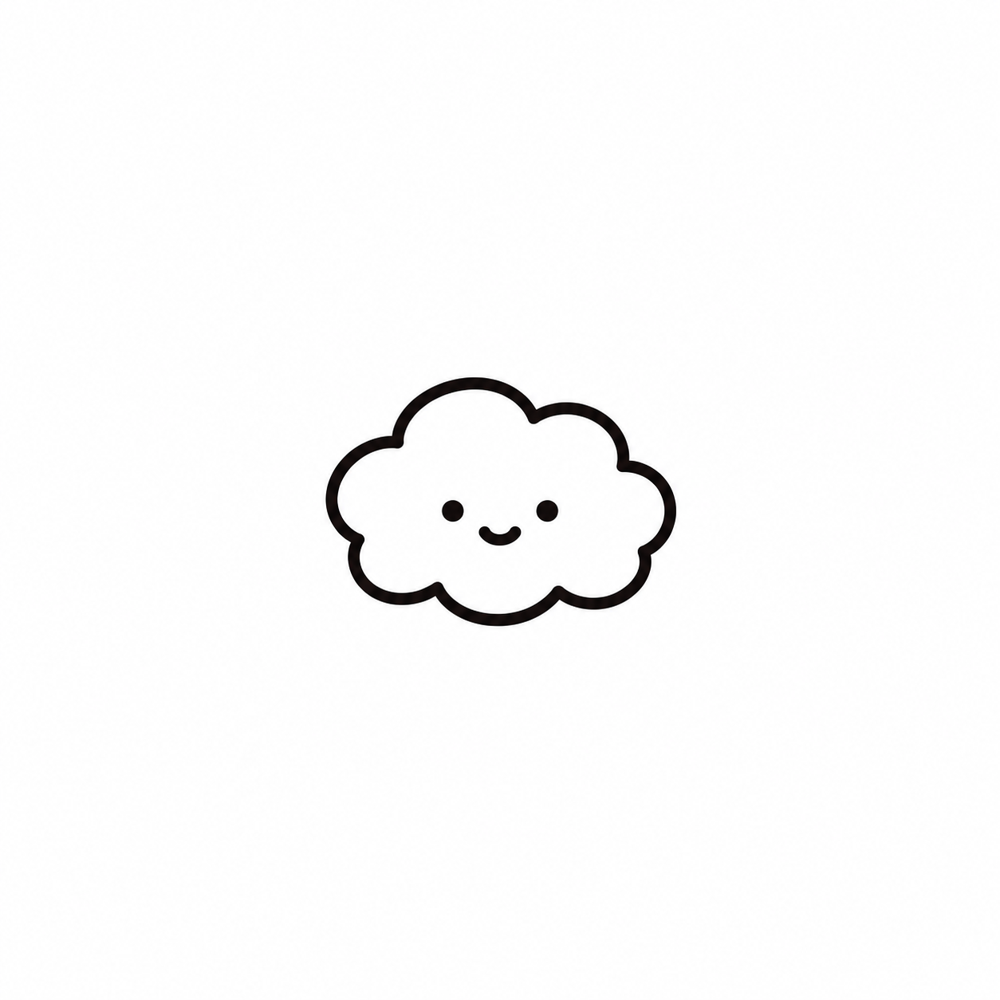

クーモKu-mo
おしゃべりな案内役a talkative guide
some clouds から生まれた、独立したキャラクター。
考えたり、話したり、
ときどき何かを教えてくれます。A character born from some clouds,
now standing on its own.
Ku-mo thinks, talks,
and sometimes teaches us something.
some clouds の小さな仲間たちthe little friends of some clouds
some clouds には、
空をふわふわ漂う仲間たちがいます。At some clouds,
there are friends who float gently through the sky.

おしゃべりな案内役a talkative guide
some clouds から生まれた、独立したキャラクター。
考えたり、話したり、
ときどき何かを教えてくれます。A character born from some clouds,
now standing on its own.
Ku-mo thinks, talks,
and sometimes teaches us something.

ちいさな仲間たちlittle cloud companions
くもくもから、ちぎれて生まれた小さな雲。
ふわふわ漂ったり、そばに寄りそったりする、
ペットのような静かな仲間たちです。Small clouds born
from pieces of kumokumo.
They drift softly,
stay close by,
and live as quiet little companions.

ちいさなペットa little pet
こくものそばにいる、
さらに小さな雲。
ふわふわ浮いたり、
なんとなくついてきたりする、
こくものペットです。A much smaller cloud
that stays by kokumo's side.
It floats softly,
follows along somehow,
and lives as kokumo's little pet.

静かに見守る雲a quiet watching cloud
some clouds にいる、大きな雲。
こくもたちのもとになった存在で、
話さず、静かにみんなを見守っています。A large cloud
living in some clouds.
It is the cloud
from which kokumo came,
and quietly watches over everyone without speaking.
くもくもからこくもが生まれ、
クーモはその世界の中で動き、話します。The kokumo are born from kumokumo,
and Ku-mo moves and talks within their world.
some clouds は、
そんな小さな仲間たちといっしょにできています。some clouds is made
together with these little friends.